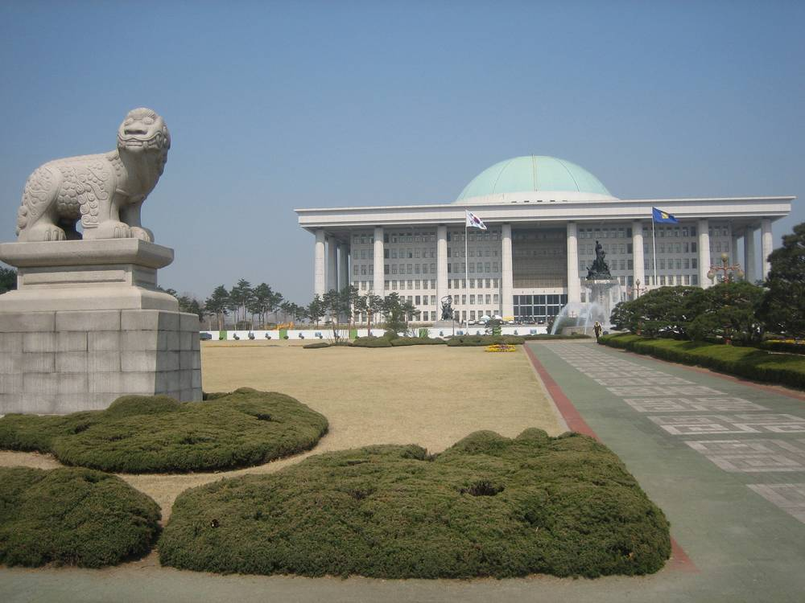
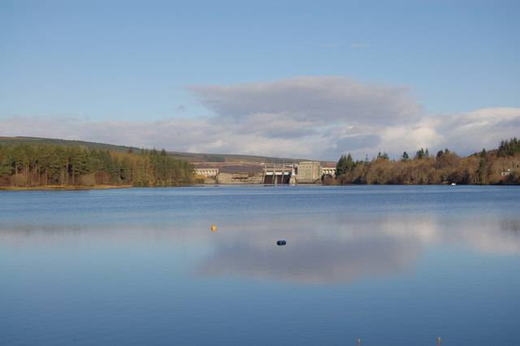

금융
산중위 예산안 의결 두 번째 연기…미래대응기금 지방교부세 산정 방식 쟁점으로
국민의힘 중복 편성·기금 소멸 뒤 대책 질의 / 더불어민주당 국가채무비율 들어 반박…법정 시한 12월 2일
철원·화천 군의원, 접경지역 정책포럼서 영농형 태양광 군민펀드 제안
철원 농지 약 60% 외지인 소유 우려…화천은 군 유휴 추정부지 약 1,087만㎡ 활용 특례 확대 제안

남호주 아파트에도 공동 태양광·배터리, 설치비 절반 보조에 나머지는 무이자 융자
연방·주정부 1,780만 호주달러 투입, 건물 한 곳당 보조금·융자 각 최대 4만7,500 호주달러, 남호주 주민 12명 중 1명이 구분 소유 건물 거주


독일 이젠 주민 풍력 협동조합, 조합원 약 470명에 출자금 80만 유로 모았다
바이에른 산림공사가 7월 21일 풍력 2기 사업자로 선정…착공까지 몇 년 더 걸린다고 답변

미래대응기금 8개 사업 4조3,472억 원, 신규·계속 분류 갈려…예산안 처리 시한 12월 2일
청년일자리도약장려금 9,012억 원 중 70.1%는 이미 채용된 청년 몫 / 기획예산처 신규 79개·계속 51개

독일 에너지협동조합 프로콘, 아미바 운영 통신사로부터 6만3,300유로 출자 받아
지분 1,266좌를 사들인 통신사는 배당도 다시 지분에 넣기로 했고, 조합원은 4만2,000명을 넘는다

스코틀랜드 송전 사업자, 로크신 남쪽 주민에게 162만 파운드 기금 설계 묻는다
레어그·로가트 설문 12월 14일까지, 설명회 3회…'사우스 로크신 지역기금'은 2027년 문 열 예정


金融
南オーストラリアの集合住宅にも共同の太陽光・蓄電池、設置費の半分を補助し残りは無利子融資
連邦・州政府が1,780万豪ドルを投入、1棟あたり補助金・融資とも最大4万7,500豪ドル、南オーストラリアは住民12人に1人が区分所有の建物に居住
ドイツのエネルギー協同組合プロコン、アミバ運営の通信会社から6万3,300ユーロの出資
持分1,266口を取得した通信会社は配当も再び持分に入れる方針で、組合員は4万2,000人を超える
スコットランドの送電事業者、ロッホ・シン南の住民に162万ポンドの基金設計を問う
レアーグ・ロガートのアンケートは12月14日まで、説明会3回…「サウス・ロッホ・シン地域基金」は2027年開始予定
金融
南澳公寓也能装共享光伏和电池，补贴一半安装费，其余提供无息贷款
联邦与州政府投入1,780万澳元，每处物业补贴与贷款各最高4万7,500澳元，南澳每12名居民中有1人住在分层产权建筑
Finance
Cheorwon and Hwacheon county councillors propose an agrivoltaic residents' fund at border-region policy forum
Concern that about 60% of Cheorwon farmland is owned by outsiders; Hwacheon councillor proposes wider use of about 10.87 million sq. m of presumed idle military land
Shared solar and batteries reach South Australian apartments, with half the cost in grants and the rest in zero-interest loans
Federal and state governments commit A$17.8 million; grants and loans are each capped at A$47,500 per building; one in 12 South Australians lives in strata
Korea's public finance put $27.7 billion into overseas fossil fuels, 4.8 times its climate finance
2018-2022 figures: Green Climate Fund payment rate 23.3%, 34th of 35 pledgers
Isen residents' wind cooperative in Germany reaches about 470 members and €800,000 in capital
Bavarian State Forests picked a cooperative for two turbines on July 21; construction is still years away, managing director says
German energy co-op Prokon takes €63,300 stake from telecom firm behind Amiva
The company bought 1,266 shares and will reinvest dividends; Prokon has more than 42,000 members
Scottish Transmission Operator Asks Residents South of Loch Shin to Help Design a 1.62 Million Pound Fund
Lairg and Rogart survey open to December 14, three sessions; South Loch Shin Local Fund due to open in 2027
Shinhyup to Lend Up to 85% of Sunlight Income Village Solar Costs and Joins Gochang Offshore Wind Loan
Interest subsidy for agency-recommended villages; 100 billion won syndicated loan agreed for Gochang offshore wind on August 6